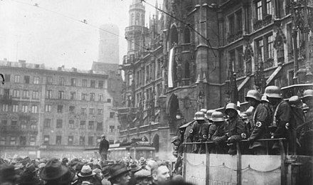

Munich is the capital and most populous city of Bavaria. With a population of 1,558,395 inhabitants as of 31 July 2020, it is the third-largest city in Germany, after Berlin and Hamburg, and thus the largest which does not constitute its own state, as well as the 11th-largest city in the European Union. The city's metropolitan region is home to 6 million people.
Prehistory
Roman Period
Origin of Medieval Town
Capital of Reunited Bavaria
WWI - WWII
Post War
Archeological finds in Munich, such as in Freiham/Aubing, indicate early settlements and graves dating back to the Bronze Age (7th–6th century BC). Evidence of Celtic settlements from the Iron Age have been discovered in areas around Perlach.
The ancient Roman road Via Julia, which connected Augsburg and Salzburg, crossed over the Isar River south of modern-day Munich, at the towns of Baierbrunn and Gauting. A Roman settlement north-east of downtown Munich was excavated in the neighborhood of Denning/Bogenhausen.
The origin of the modern city of Munich is the result of a power struggle between a military warlord and an influential Catholic bishop. Henry the Lion, Duke of Saxony and Duke of Bavaria (d. 1195) was one of the most powerful German princes of his time. He ruled over vast territories in the German Holy Roman Empire from the North and Baltic Seas to the Alps. Henry wanted to expand his power in Bavaria by gaining control of the lucrative Salt Trade, which the Catholic Church in Freising had under its control.
Bishop Otto von Freising (d. 1158) was a scholar, historian and bishop of a large section of Bavaria that was part of his diocese of Freising. Years earlier (the exact time is unclear, but may have been in the early 10th century), Benedictine monks helped build a toll bridge and a customs house over the Isar River (most likely in the modern town of Oberföhring) to control the Salt Trade between Augsburg and Salzburg (which had existed since Roman times).
Henry wanted to control the toll bridge and its income for himself, so he destroyed the bridge and customs house in 1156. He then built a new toll bridge, customs house and a coin market closer to his home downriver (at a settlement around the area of modern oldtown Munich: Marienplatz, Marienhof and the St. Peter's Church). This new toll bridge most likely crossed the Isar where the Museuminsel and the modern Ludwigsbrücke is now located.
Bishop Otto protested to his nephew, Emperor Frederick Barbarosa (d. 1190). However, on 14 June 1158, in Augsburg, the conflict was settled in favor of Duke Henry. The Augsburg Arbitration mentions the name of the location in dispute as forum apud Munichen. Although Bishop Otto had lost his bridge, the arbiters ordered Duke Henry to pay a third of his income to the Bishop in Freising as compensation.
14 June 1158, is considered the official 'founding day' of the city of Munich, not the date when it was first settled. Archaeological excavations at Marienhof Square (near Marienplatz) in advance of the expansion of the S-Bahn (subway) in 2012 discovered shards of vessels from the 11th century, which prove again that the settlement of Munich must be older than the Augsburg Arbitration of 1158. The old St. Peter's Church near Marienplatz is also believed to predate the founding date of the town.
In 1175 Munich received city status and fortification. In 1180, after Henry the Lion's fall from grace with Emperor Frederick Barbarosa, including his trial and exile, Otto I Wittelsbach became Duke of Bavaria, and Munich was handed to the Bishop of Freising. In 1240, Munich was transferred to Otto II Wittelsbach and in 1255, when the Duchy of Bavaria was split in two, Munich became the ducal residence of Upper Bavaria.
Duke Louis IV, a native of Munich, was elected German king in 1314 and crowned as Holy Roman Emperor in 1328. He strengthened the city's position by granting it the salt monopoly, thus assuring it of additional income.
On 13 February 1327, a large fire broke out in Munich that lasted two days and destroyed about a third of the town.
In 1349 the Black Death ravaged Munich and Bavaria.
In the 15th century, Munich underwent a revival of Gothic arts: the Old Town Hall was enlarged, and Munich's largest Gothic church – the Frauenkirche – now a cathedral, was constructed in only 20 years, starting in 1468.


When Bavaria was reunited in 1506 after a brief war against the Duchy of Landshut, Munich became its capital. The arts and politics became increasingly influenced by the court (see Orlando di Lasso and Heinrich Schütz). During the 16th century, Munich was a centre of the German counter reformation, and also of renaissance arts. Duke Wilhelm V commissioned the Jesuit Michaelskirche, which became a centre for the counter-reformation, and also built the Hofbräuhaus for brewing brown beer in 1589. The Catholic League was founded in Munich in 1609.
In 1623, during the Thirty Years' War, Munich became an electoral residence when Maximilian I, Duke of Bavaria was invested with the electoral dignity, but in 1632 the city was occupied by Gustav II Adolph of Sweden. When the bubonic plague broke out in 1634 and 1635, about one-third of the population died. Under the regency of the Bavarian electors, Munich was an important centre of Baroque life, but also had to suffer under Habsburg occupations in 1704 and 1742.
After making an alliance with Napoleonic France, the city became the capital of the new Kingdom of Bavaria in 1806 with Elector Maximillian Joseph becoming its first King. The state parliament (the Landtag) and the new archdiocese of Munich and Freising were also located in the city.
During the early to mid-19th century, the old fortified city walls of Munich were largely demolished due to population expansion.
Munich's annual Beer Festival, Oktoberfest, has its origins from a royal wedding in October 1810. The fields are now part of the 'Theresienwiese' near downtown.
In 1826, Landshut University was moved to Munich. Many of the city's finest buildings belong to this period and were built under the first three Bavarian kings. Especially Ludwig I rendered outstanding services to Munich's status as a centre of the arts, attracting numerous artists and enhancing the city's architectural substance with grand boulevards and buildings.
The first Munich railway station was built in 1839, with a line going to Augsburg in the west. By 1849 a newer Munich Central Train Station (München Hauptbahnhof) was completed, with a line going to Landshut and Regensburg in the north.
By the time Ludwig II became king in 1864, he remained mostly aloof from his capital and focused more on his fanciful castles in the Bavarian countryside, which is why he is known the world over as the 'fairytale king'. Nevertheless, his patronage of Richard Wagner secured his posthumous reputation, as do his castles, which still generate significant tourist income for Bavaria. Later, Prince Regent Luitpold's years as regent were marked by tremendous artistic and cultural activity in Munich, enhancing its status as a cultural force of global importance (see Franz von Stuck and Der Blaue Reiter).

Following the outbreak of World War I in 1914, life in Munich became very difficult, as the Allied blockade of Germany led to food and fuel shortages. During French air raids in 1916, three bombs fell on Munich.
In March 1916, three separate aircraft-engine and automobile companies joined to form 'Bayerische Motoren Werke' (BMW) in Munich.
After World War I, the city was at the centre of substantial political unrest. In November 1918, on the eve of the German revolution, Ludwig III and his family fled the city. After the murder of the first republican premier of Bavaria Kurt Eisner in February 1919 by Anton Graf von Arco auf Valley, the Bavarian Soviet Republic was proclaimed. When Communists took power, Lenin, who had lived in Munich some years before, sent a congratulatory telegram, but the Soviet Republic was ended on 3 May 1919 by the Freikorps. While the republican government had been restored, Munich became a hotbed of extremist politics, among which Adolf Hitler and the National Socialists soon rose to prominence.
Munich's first film studio (Bavaria Film) was founded in 1919.[40]
In 1923, Adolf Hitler and his supporters, who were concentrated in Munich, staged the Beer Hall Putsch, an attempt to overthrow the Weimar Republic and seize power. The revolt failed, resulting in Hitler's arrest and the temporary crippling of the Nazi Party (NSDAP). The city again became important to the Nazis when they took power in Germany in 1933. The party created its first concentration camp at Dachau, 16 km (9.9 mi) north-west of the city. Because of its importance to the rise of National Socialism, Munich was referred to as the Hauptstadt der Bewegung ("Capital of the Movement"). The NSDAP headquarters were in Munich and many Führerbauten ("Führer buildings") were built around the Königsplatz, some of which still survive.
In March 1924, Munich broadcast its first radio program. The station became 'Bayerischer Rundfunk' in 1931.[41]
The city was the site where the 1938 Munich Agreement signed between Britain and France with Germany as part of the Franco-British policy of appeasement. The British Prime Minister Neville Chamberlain assented to the German annexation of Czechoslovakia's Sudetenland region in the hopes of satisfying Hitler's territorial expansion.[42]
The first airport in Munich was completed in October 1939, in the area of Riem. The airport would remain there until it was moved closer to Freising in 1992.[43]
On November 8, 1939, shortly after the Second World War had begun, a bomb was planted in the Bürgerbräukeller in Munich in a attempt to assassinate Adolf Hitler during a political party speech. Hitler, however, had left the building minutes before the bomb went off. On its site today stands the GEMA Building, the Gasteig Cultural Centre and the Munich City Hilton Hotel.[44]
Munich was the base of the White Rose, a student resistance movement from June 1942 to February 1943. The core members were arrested and executed following a distribution of leaflets in Munich University by Hans and Sophie Scholl.
The city was heavily damaged by Allied bombing during World War II, with 71 air raids over five years.
After US occupation in 1945, Munich was completely rebuilt following a meticulous plan, which preserved its pre-war street grid. In 1957, Munich's population surpassed one million. The city continued to play a highly significant role in the German economy, politics and culture, giving rise to its nickname Heimliche Hauptstadt ("secret capital") in the decades after World War II.
In Munich, Bayerischer Rundfunk began its first television broadcast in 1954.[45]
Since 1963, Munich has been the host city for annual conferences on international security policy.
Munich also became known on the political level due to the strong influence of Bavarian politician Franz Josef Strauss from the 1960s to the 1980s. The Munich Airport (built in 1992) was named in his honor.[46]
Munich was the site of the 1972 Summer Olympics, during which 11 Israeli athletes were murdered by Palestinian terrorists in the Munich massacre, when gunmen from the Palestinian "Black September" group took hostage members of the Israeli Olympic team. Mass murders also occurred in Munich in 1980 and 2016.
Munich also hosted the FIFA World Cup finals in 1974.
Munich is also home of the famous Nockherberg Strong Beer Festival during the Lenten fasting period (usually in March). Its origins go back to the 17th/18th century, but has become popular when the festivities were first televised in the 1980s. The fest includes comical speeches and a mini-musical in which numerous German politicians are parodied by look-alike actors.[47]
Munich was one of the host cities for the 2006 FIFA World Cup.
Munich was one of the host cities for the UEFA European 2020 soccer/football championship, (which was delayed for a year due to the COVID-19 pandemic in Germany).